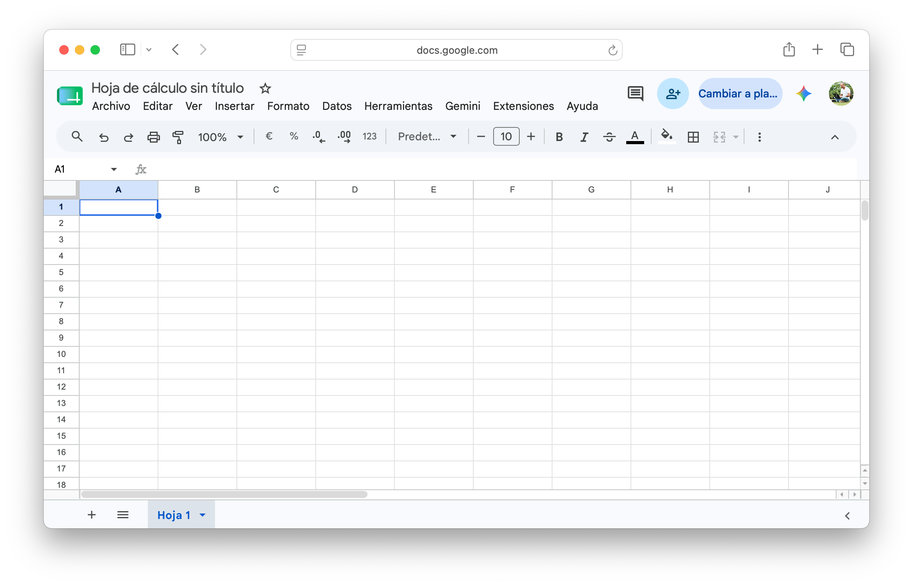
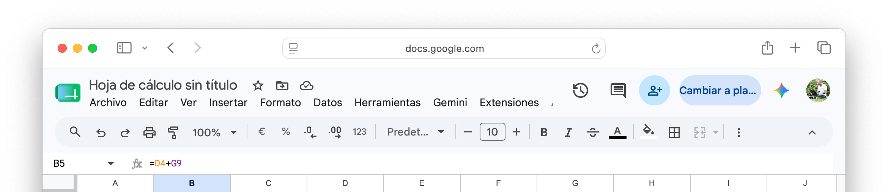
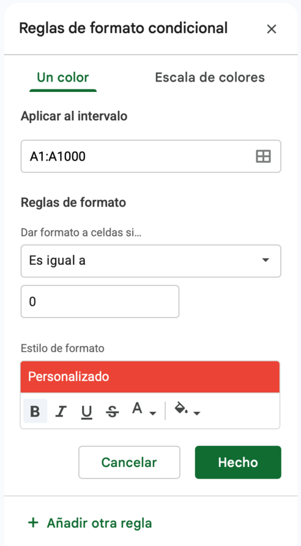
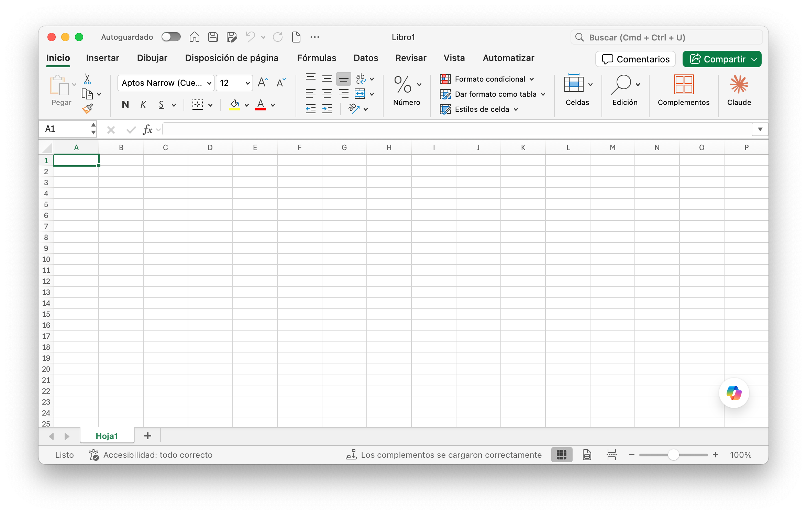

La planilla: crear el archivo y conocer Google Sheets
Antes de trabajar con datos, necesitás el espacio donde van a vivir. El primer paso de esta clase no es escribir una fórmula: es crear el archivo correctamente y entender la herramienta.
Si tuvieras que calcular a mano cuánto le corresponde pagar a cada persona en un grupo de ocho amigos que gastaron montos distintos en un viaje, ¿cuántas veces tendrías que rehacer la cuenta si alguien agrega un gasto nuevo a mitad de camino?
Google Sheets: la interfaz
Google Sheets es la planilla de cálculo de Google Workspace — la misma familia de herramientas que ya usaste con Google Docs en el Bloque 2. Es gratuita, funciona en el navegador y no requiere instalar nada. Para crear un archivo nuevo tenés tres caminos:
| Opción | Cómo | Cuándo usarla |
|---|---|---|
| Más rápida | Escribí sheets.new en la barra del navegador y presioná Enter. | Cuando querés arrancar sin abrir Drive. |
| Desde Drive | drive.google.com → botón + Nuevo → Hoja de cálculo de Google. | Cuando ya estás en Drive y querés guardar directamente en una carpeta. |
| Desde Sheets | sheets.google.com → clic en el signo "+". | Cuando tenés varios archivos abiertos y querés crear uno más. |
Elementos clave de la interfaz
| Elemento | Dónde está | Para qué sirve |
|---|---|---|
| Barra de fórmulas | Debajo de la barra de menús | Muestra el contenido real de la celda activa — si hay una fórmula, la ves ahí, no el resultado |
| Celda activa | Recuadro con borde grueso | La celda donde vas a escribir o pegar algo ahora mismo |
| Encabezados de fila y columna | Números a la izquierda, letras arriba | Identifican cada celda por su intersección — por ejemplo, B4 |
| Pestañas de hojas | Parte inferior | Un archivo (libro) puede tener varias hojas; cada una es un espacio de trabajo independiente |
| Controlador de relleno | Cuadradito en la esquina inferior derecha de la celda seleccionada | Arrastrándolo, copiás una fórmula o continuás una serie hacia las celdas contiguas |

La interfaz de Sheets recién abierta: barra de fórmulas arriba, celda activa marcada, encabezados de fila y columna, pestañas de hoja abajo.
💡 Idea clave
El autoguardado de Sheets no reemplaza la buena nomenclatura. "Hoja de cálculo sin título" guardada en la raíz de Drive es tan difícil de encontrar como un archivo suelto en cualquier escritorio. Nombrá la planilla en cuanto la creás — con el mismo formato que ya usás desde la Clase 01: AAAA-MM-DD_Informatica_ClaseNN_VN.
Google Sheets vs. Excel de escritorio
Vas a escuchar hablar de "Excel" y de "Sheets" como si fueran lo mismo. Comparten la lógica (celdas, filas, columnas, fórmulas) pero no son la misma herramienta.
| Google Sheets | Excel de escritorio | |
|---|---|---|
| Costo | Gratuito con cuenta de Google | Requiere licencia de Microsoft Office |
| Dónde vive el archivo | En la nube (Drive), se guarda solo | En tu computadora (o OneDrive), hay que guardar manualmente |
| Colaboración | Tiempo real, múltiples personas a la vez | Requiere compartir el archivo o usar Excel Online |
| Funciones avanzadas | Cubre la gran mayoría de casos de uso | Tablas dinámicas más potentes, macros, Power Query |
| Ideal para | Trabajo colaborativo, planillas livianas, uso cotidiano | Análisis pesado, archivos grandes, entornos corporativos con Office |
💡 Consejo
En esta materia vamos a trabajar en Google Sheets porque es gratuito y accesible para todos desde el primer día. Todo lo que aprendas acá — referencias, funciones, formato condicional — se traslada directamente a Excel: las fórmulas son casi idénticas.
Actividad 1 · Crear la planilla
- Abrí Drive → carpeta "Informática - UNQ" → subcarpeta "Clase 08" (creala si no existe).
- Dentro de esa carpeta, creá una hoja de cálculo nueva. Nombrala exactamente:
2026-XX-XX_Informatica_Clase08_V01(reemplazá XX por la fecha de hoy). - En la celda
A1escribí "Producto" y enB1escribí "Precio". - Cargá 5 productos con precios en las filas siguientes (podés inventarlos).
- Probá el controlador de relleno: en una celda vacía escribí "lunes" y usá el cuadradito de la esquina para completar los días de la semana.
- En otra celda escribí el número
1y debajo2. Seleccioná ambas y arrastrá el controlador hacia abajo — Sheets va a detectar el patrón y continuar la serie (3, 4, 5...).
Ya tenés la planilla creada, nombrada correctamente y en la carpeta que compartiste con el docente.
La planilla de cálculo como herramienta para pensar con datos
Un documento de texto organiza ideas. Una planilla de cálculo organiza datos que se relacionan entre sí mediante operaciones. La diferencia no es cosmética: en una planilla, cuando cambiás un dato de origen, todo lo que depende de él se recalcula solo.
Esa es la ventaja central de la herramienta: separar el dato (lo que cargás) de la fórmula (lo que calculás a partir de ese dato). Si en algún momento aprendiste a usar una calculadora para resolver un problema y después tuviste que "empezar de nuevo" porque cambió un número, ya sabés por qué esto importa.
Antes de escribir una sola fórmula, preguntate: ¿qué dato de esta planilla es fijo (no cambia fila a fila) y cuál cambia? Esa pregunta es la que vas a responder hoy con referencias relativas y absolutas.
Celdas, rangos y referenciación
Cada celda se nombra por la intersección de su columna (letra) y su fila (número): A1, C12, AB3. Un rango es un conjunto de celdas contiguas y se escribe con dos puntos: A2:A10 incluye A2, A3, A4... hasta A10.
⚠️ Atención
Antes de aplicar cualquier función o formato, seleccioná primero el rango correcto. La mayoría de los errores en planillas nuevas vienen de aplicar algo sobre el rango equivocado — una fila de más, una columna de menos.
Referencias relativas y absolutas
Tenés una fórmula que convierte un precio en pesos a dólares dividiendo por la cotización, que está escrita en una única celda. Si arrastrás esa fórmula hacia las diez filas de abajo, ¿qué creés que pasa con la celda de la cotización?
Esta es la distinción más importante de la clase — y la que más confunde a quien recién empieza.

La barra de fórmulas muestra la fórmula real, no el resultado: acá, B5 vale lo que sea que dé D4+G9.
Referencia relativa: el comportamiento por defecto
Cuando escribís una fórmula como =A1+A2 y la copiás hacia abajo con el controlador de relleno, Sheets no repite literalmente "A1+A2" en cada fila. Ajusta la referencia según la posición relativa: en la fila siguiente pasa a ser =A2+A3, después =A3+A4, y así sucesivamente.
Esto es exactamente lo que querés la mayoría de las veces: si tenés una columna de precios y otra de cantidades, y calculás el total fila por fila, cada fila debe multiplicar sus propios datos, no siempre los mismos.
Referencia absoluta: cuando un dato no debe moverse
El problema aparece cuando una fórmula necesita referirse siempre a la misma celda, sin importar hacia dónde la arrastres. El caso clásico: convertir una lista de precios en pesos a dólares, usando una única celda con la cotización del dólar.
Si escribís =B2/D2 (precio en pesos dividido cotización) y arrastrás hacia abajo, Sheets también va a mover D2 a D3, D4... y esas celdas están vacías. El resultado se rompe.
La solución es fijar esa referencia con el signo $ antes de la fila, la columna, o ambas:
| Notación | Qué queda fijo | Cuándo usarla |
|---|---|---|
B2 | Nada — referencia relativa | Cuando cada fila debe operar con sus propios datos |
$B2 | Columna fija, fila libre | Al arrastrar hacia los costados, siempre apunta a la columna B |
B$2 | Fila fija, columna libre | Al arrastrar hacia abajo, siempre apunta a la fila 2 |
$B$2 | Columna y fila fijas — referencia absoluta | El dato es un valor único de referencia para toda la planilla (cotización, IVA, un total) |
💡 Consejo: la tecla F4
No hace falta escribir los símbolos $ a mano. Mientras editás una fórmula, hacé clic sobre la referencia de celda y presioná F4 (en Mac: ⌘+T o Fn+F4 según el teclado). Cada vez que la apretás, alterna entre los cuatro tipos de referencia: B2 → $B$2 → B$2 → $B2 → B2.
⚠️ Atención
Si tu planilla arroja errores #N/A o valores en blanco al arrastrar una fórmula, la primera sospecha debería ser una referencia que necesitabas fija y quedó relativa.
Actividad 2
- En una hoja nueva, armá esta tabla a partir de la fila 1:
Producto Precio USD Auriculares 25 Mochila 40 Termo 18 - En una celda separada (por ejemplo
D1), escribí "Cotización dólar" y enD2cargá un valor, por ejemplo1050. - Agregá una columna "Precio ARS" y calculá, para el primer producto,
=B2*$D$2. - Usá el controlador de relleno para copiar la fórmula hacia abajo. Verificá que los tres productos muestren un resultado correcto — si alguno da error o queda en blanco, revisá que hayas fijado
D2con$. - Cambiá el valor de la cotización en
D2. Confirmá que los tres precios en pesos se recalculan solos.
Actividad 2 · Extra
Referencias mixtas: fijar solo la fila o solo la columna.
- En una hoja nueva, armá una tabla de multiplicar: en la fila 1 (celdas B1:F1) cargá los números 1 a 5; en la columna A (A2:A6) cargá también los números 1 a 5.
- En la celda
B2, escribí una fórmula que multiplique el valor de la fila 1 por el valor de la columna A, usando referencias mixtas:=B$1*$A2. - Copiá esa fórmula hacia toda la tabla (arrastrando primero hacia la derecha, después seleccionando toda la fila 2 y arrastrando hacia abajo). Si las referencias mixtas están bien puestas, obtenés una tabla de multiplicar completa con una sola fórmula.
- Explicá con tus palabras por qué
B$1necesita la fila fija y$A2necesita la columna fija, y no al revés.
Funciones matemáticas esenciales
¿Cómo escribirías, sin usar ninguna función, la fórmula para sumar 300 celdas? ¿Y para calcular el promedio de esas mismas 300 celdas a mano, una por una?
Qué es una función
Una fórmula como =A1+A2+A3+A4+A5 funciona, pero se vuelve inmanejable si en vez de 5 celdas tenés 500. Una función es una fórmula predefinida por Sheets que resuelve una operación común con una sintaxis breve.
Toda función tiene la misma estructura:
=NOMBRE_FUNCIÓN(argumento1; argumento2; ...)- Empieza siempre con
=. - El nombre de la función va seguido de un paréntesis de apertura.
- Los argumentos — los datos sobre los que opera — van dentro del paréntesis, separados por punto y coma o especificados como rango con dos puntos.
- Cierra con paréntesis.
=SUMA(A1:A5) es equivalente a =A1+A2+A3+A4+A5, pero se sigue funcionando igual de bien si el rango tiene 5 celdas o 5.000.
Las cinco funciones que tenés que dominar hoy
| Función | Qué hace | Ejemplo |
|---|---|---|
SUMA | Suma todos los valores numéricos del rango | =SUMA(B2:B10) |
PROMEDIO | Calcula el promedio (media aritmética) del rango | =PROMEDIO(B2:B10) |
CONTAR | Cuenta cuántas celdas del rango contienen números | =CONTAR(B2:B10) |
CONTARA | Cuenta cuántas celdas del rango no están vacías (números, texto, lo que sea) | =CONTARA(A2:A10) |
MAX / MIN | Devuelven el valor más alto / más bajo del rango | =MAX(B2:B10) / =MIN(B2:B10) |
⚠️ Atención: CONTAR vs. CONTARA
CONTAR solo cuenta celdas numéricas. Si tu rango tiene nombres de personas y querés saber cuántas filas cargadas hay, CONTAR te va a devolver 0 — necesitás CONTARA. Es uno de los errores más comunes al empezar.
El ícono de autosuma
Sheets tiene un ícono de suma automática (Σ) en la barra de herramientas que detecta el rango de números más probable y arma la función SUMA por vos. Es útil como punto de partida, pero siempre conviene verificar que el rango detectado sea el correcto antes de confirmar.
💡 Consejo
Podés escribir la función completa a mano o dejar que Sheets te sugiera el autocompletado apenas empezás a tipear =SUM — aparece una ayuda con la sintaxis exacta y una breve descripción. Usala para no memorizar el orden de los argumentos de memoria.
Actividad 3
Vas a armar una planilla de gastos para un viaje de egresados.
- En una hoja nueva, cargá esta tabla desde
A1:Categoría Enero Febrero Marzo Alojamiento 45000 38000 52000 Comida 22000 25000 19000 Transporte 15000 12000 18000 Excursiones 30000 0 41000 - Agregá una columna "Total categoría" y calculá, para cada fila, la suma de los tres meses con
SUMA. - Agregá una fila "Total mes" debajo de la tabla y calculá, para cada mes, la suma de las cuatro categorías.
- En una celda aparte, calculá el promedio mensual de la categoría "Comida" con
PROMEDIO. - Calculá el gasto máximo y mínimo registrado en toda la tabla con
MAXyMIN. - En otra celda, usá
CONTARsobre el rango de meses de "Excursiones" para verificar que reconoce el 0 de Febrero como un valor numérico válido (el resultado debe ser 3, no 2).
Actividad 3 · Extra
- Agregá una columna "Responsable" a la izquierda de "Categoría" y cargá un nombre en cada fila (podés repetir nombres).
- Calculá con
CONTARAcuántas filas de responsables hay cargadas. - Borrá el contenido de una celda de la columna "Responsable" (dejala vacía) y verificá que el resultado de
CONTARAbaja en uno. - Reflexioná: si hubieras usado
CONTARen lugar deCONTARAsobre esa misma columna, ¿qué resultado te habría dado? Probalo.
Formato condicional
Tenés una planilla con 200 filas de gastos. ¿Cómo harías para detectar, sin leer fila por fila, cuáles superan tu presupuesto?
Qué resuelve
Una tabla con cien filas de números es difícil de leer a simple vista. El formato condicional aplica automáticamente un estilo visual (color de fondo, color de fuente) a las celdas que cumplen una condición que vos definís. No cambia el dato — cambia cómo se ve.
Cómo aplicarlo
- Seleccioná el rango sobre el que querés aplicar la regla.
- Andá a Formato > Formato condicional. Se abre un panel a la derecha.
- Elegí entre dos tipos de regla:
- Escala de color: asigna un gradiente (por ejemplo, de rojo a verde) según el valor relativo de cada celda dentro del rango. Ideal para ver de un vistazo dónde están los valores altos y bajos.
- Regla de un solo color: aplica un formato fijo (por ejemplo, fondo rojo) a las celdas que cumplen una condición específica — "es mayor que", "es menor que", "el texto contiene", etc.
- Definí la condición y el formato a aplicar, y hacé clic en Listo.

El panel de Formato condicional: elegís el rango, la condición ("Es igual a", "Es mayor que"...) y el estilo — acá, fondo rojo para marcar un caso puntual.
Casos de uso frecuentes
| Necesitás | Tipo de regla |
|---|---|
| Ver de un vistazo qué meses gastaron más y cuáles menos | Escala de color |
| Marcar en rojo los valores que superan un presupuesto | Regla de un solo color · "Es mayor que" |
| Resaltar en verde los valores por debajo de un mínimo | Regla de un solo color · "Es menor que" |
| Marcar filas que contienen una palabra específica (ej. "pendiente") | Regla de un solo color · "El texto contiene" |
💡 Consejo
El formato condicional se actualiza solo cuando cambian los datos — no hace falta reaplicarlo. Es la razón por la que conviene usarlo en vez de pintar celdas a mano: si el dato cambia, el color se ajusta automáticamente.
⚠️ Atención
El formato condicional se aplica al rango que tenías seleccionado en el momento de crear la regla. Si después agregás filas nuevas por fuera de ese rango, no van a heredar el formato — hay que editar la regla y extender el rango, o aplicarla sobre una columna completa desde el principio.
Actividad 4
- Sobre la tabla de gastos de la Actividad 3, seleccioná el rango de valores (sin encabezados) y aplicá una escala de color para visualizar en qué categoría y mes se concentraron los gastos más altos.
- En una copia de la fila "Total mes", aplicá una regla de un solo color: fondo rojo y fuente blanca para los meses cuyo total supere los $110.000.
- Agregá una columna "Estado" con el texto "revisar" en al menos dos filas y el resto vacío. Aplicá una regla que resalte en amarillo las celdas de esa columna que contengan la palabra "revisar".
- Cambiá un valor de la tabla de forma que un mes que antes no superaba $110.000 ahora sí lo supere. Confirmá que el formato condicional se actualiza sin que tengas que tocar nada más.
Actividad 4 · Extra
- Sobre la columna "Total categoría", aplicá una regla que resalte en verde la fila con el valor máximo y en rojo la fila con el valor mínimo. Pista: podés usar una fórmula personalizada dentro de Formato condicional (opción "La fórmula personalizada es") comparando cada celda contra
MAXoMINdel rango completo — para esto vas a necesitar fijar el rango con$. - Si te trabás, pedile ayuda a una IA con un prompt específico: contale qué rango tenés, qué querés resaltar, y pedile la fórmula exacta para pegar en "fórmula personalizada". Verificá el resultado antes de darlo por bueno — no copies una fórmula que no entendés.
Ejercicio integrador: de Google Sheets a Excel
Cerramos la clase con un ejercicio único que obliga a usar todo lo visto hoy: referencias relativas y absolutas, las cinco funciones matemáticas y formato condicional. Lo armás primero en Google Sheets y después lo replicás en Excel, para practicar los dos entornos que vas a necesitar a lo largo del cuatrimestre.
Parte A · Google Sheets
Vas a armar el control de ventas semanal de un emprendimiento.
- En una hoja nueva, cargá esta tabla desde
A1:Producto Precio unitario Lunes Martes Miércoles Jueves Viernes Velas aromáticas 3500 4 2 0 6 3 Jabones artesanales 1800 8 10 5 0 12 Sales de baño 2200 3 3 4 2 5 Difusores 5600 1 0 2 1 3 - En una celda aparte, cargá "Comisión de la plataforma" con un valor de
8%. Esta celda es tu referencia absoluta para todo el ejercicio. - Agregá una columna "Unidades vendidas" con la suma de lunes a viernes (
SUMA, referencia relativa). - Agregá una columna "Total vendido" que multiplique "Unidades vendidas" por "Precio unitario" (referencia relativa).
- Agregá una columna "Total neto" que le reste a "Total vendido" la comisión de la plataforma, usando la celda de comisión con referencia absoluta (
$). - Calculá, debajo de la tabla:
- El total vendido en la semana (
SUMA) - El promedio de unidades vendidas por día del producto "Jabones artesanales" (
PROMEDIOsobre el rango de días de esa fila) - El producto con más y con menos unidades vendidas en la semana (
MAX,MIN) - La cantidad de días de la semana en los que "Velas aromáticas" no tuvo ventas — pista: contás con
CONTARsobre el rango de días y comparás contra la cantidad total de días
- El total vendido en la semana (
- Aplicá formato condicional:
- Escala de color sobre las celdas de ventas diarias (lunes a viernes), para ver de un vistazo los días fuertes y flojos
- Una regla de un solo color que resalte en rojo los productos cuyo "Total neto" sea menor a $10.000
Parte B · La misma planilla, en Excel
Abrí Excel (de escritorio si tenés licencia, o Excel Online si no — con tu mail @uvq.edu.ar podés sacar gratis una cuenta de Microsoft 365 Educación en signup.microsoft.com, confirmado, si todavía no tenés ninguna cuenta Microsoft) y reconstruí exactamente la misma tabla, las mismas fórmulas y el mismo formato condicional.

Excel de escritorio: misma lógica de celdas y filas que Sheets, pero con la cinta de pestañas (Inicio, Insertar, Disposición de página...) en vez del menú de Google.
| Qué buscás | En Google Sheets | En Excel |
|---|---|---|
| Fijar una referencia | F4 | F4 (Windows) / ⌘+T (Mac) |
| Formato condicional | Formato > Formato condicional | Pestaña Inicio > Estilos > Formato condicional |
| Separador de argumentos en funciones | Coma , o punto y coma ; según configuración regional | Punto y coma ; en configuración regional Argentina |
| Guardar el trabajo | Automático, en la nube | Manual, con Ctrl+G — elegí formato .xlsx |
| Autosuma | Ícono Σ en la barra de herramientas | Ícono Σ en la pestaña Inicio |
⚠️ Atención
Es normal que algo no ande igual a la primera. Si una fórmula tira error en Excel, revisá primero el separador de argumentos — es la diferencia que más problemas genera al pasar de un programa al otro.
💡 Consejo
No se trata de memorizar en qué menú está cada botón. Se trata de confirmar que la lógica — relativa vs. absoluta, cómo se arma una función, qué hace el formato condicional — es la misma sin importar el programa. Esa lógica es lo que te llevás de esta clase.
Resumen de la clase
Pasaste de escribir números sueltos a construir un sistema: referencias que se mueven o se quedan quietas según lo que necesitás, funciones que resuelven en un clic lo que nadie quiere sumar a mano, y formato condicional que hace visibles los patrones sin tocar un solo dato.
Actividades
 Actualizá tu LinkedIn
Actualizá tu LinkedIn
Google Sheets. Cómo la justificás: construyo planillas con referencias relativas y absolutas correctamente diferenciadas, de modo que una fórmula se pueda copiar sobre un rango completo sin corromper los cálculos ni requerir corrección manual celda por celda.
Una planilla no es una tabla con números: es un sistema donde cada celda puede depender de otra. Referencias relativas y absolutas son la gramática de esa dependencia — dominarlas es lo que separa "cargar datos" de "construir una herramienta que se actualiza sola".
Referencia rápida
"frase" — frase exacta-excluir — excluye un términosite: — dentro de un dominiofiletype: — por tipo de archivo2020..2026 — rango de añosClaude · Copilot
Kimi
https://doi.org/10.xxxx/... al final de la cita, si existeCtrl+Alt+F (Mac ⌘+Opción+F) — no reemplaza la cita APAdocs.new — lienzo en blanco al instanteCtrl+Shift+V (Mac ⌘+Shift+V) — pegar sin formato, nunca directo de afueraCtrl+Alt+M (Mac ⌘+Opción+M) — comentarioCtrl+Z (Mac ⌘+Z) — deshacerCtrl+Alt+1 — Encabezado 1Ctrl+Alt+2 — Encabezado 2Ctrl+Alt+0 — Texto normalCtrl+K (Mac ⌘+K) — externo: pegás la URL; interno: pestaña Encabezados y marcadoresCtrl+Intro (Mac ⌘+Intro) — salto de página, nunca Enter repetidoCtrl+Alt+M — insertar; clic en el comentario → Responder / ResolverCtrl+Shift+V (Mac ⌘+Shift+V) — pegar sin formatoCtrl+Alt+F (Mac ⌘+Opción+F) — nota al pieCtrl+Enter (Mac ⌘+Intro) — salto de páginagamma.app) — gratis, créditos limitados.pptx + PDF — siempre los dos.pptx/.ppsx = XML actual · .ppt/.pps = binario viejo=F4 (Mac: ⌘+T o Fn+F4)F2 (Mac: doble clic)Ctrl+D / Ctrl+R (Mac: ⌘+D / ⌘+R)=SUMA(rango) — suma total=PROMEDIO(rango) — media aritmética=CONTAR(rango) / =CONTARA(rango) — celdas numéricas / no vacías=MAX(rango) / =MIN(rango) — valor más alto / más bajoCtrl+Espacio / Shift+EspacioCtrl+Fin / Ctrl+InicioSUMA — SUMPROMEDIO — AVERAGECONTAR — COUNTCONTARA — COUNTAGlosario
Unidad básica de una planilla, identificada por la intersección de una columna (letra) y una fila (número), por ejemplo B4.
Conjunto de celdas contiguas, definido por la celda de inicio y la de fin separadas por dos puntos, por ejemplo A2:A10.
Referencia a una celda que se ajusta automáticamente según la posición al copiar una fórmula. Es el comportamiento por defecto.
Referencia a una celda que se mantiene fija al copiar una fórmula, indicada con el símbolo $ antes de la columna y/o la fila.
Referencia que fija solo la fila (B$2) o solo la columna ($B2), dejando libre la otra dimensión.
Cuadrado en la esquina inferior derecha de una celda seleccionada que permite copiar contenido, fórmulas o continuar series arrastrando.
Fórmula predefinida que ejecuta una operación específica sobre uno o más argumentos, con la sintaxis =NOMBRE(argumentos).
Cada uno de los valores, celdas o rangos que recibe una función entre paréntesis.
Función que devuelve la suma total de los valores numéricos de un rango.
Función que devuelve la media aritmética de los valores numéricos de un rango.
Función que cuenta la cantidad de celdas con valores numéricos dentro de un rango.
Función que cuenta la cantidad de celdas no vacías (numéricas o de texto) dentro de un rango.
Funciones que devuelven el valor más alto / más bajo dentro de un rango.
Conjunto de reglas que aplican un formato visual automático a las celdas que cumplen una condición definida, sin alterar el dato.
Tipo de formato condicional que aplica un gradiente de color según el valor relativo de cada celda dentro de un rango.
Fuentes
- Google. Función SUMA. Ayuda de Editores de Documentos de Google.
support.google.com/docs/answer/3093669 - Google. Usar el formato condicional.
support.google.com/docs/answer/78413 - Microsoft. Referencias de celda relativas y absolutas. Soporte de Microsoft.
support.microsoft.com/es-es/office - Microsoft. Usar el formato condicional para resaltar información. Soporte de Microsoft.
support.microsoft.com/es-es/office